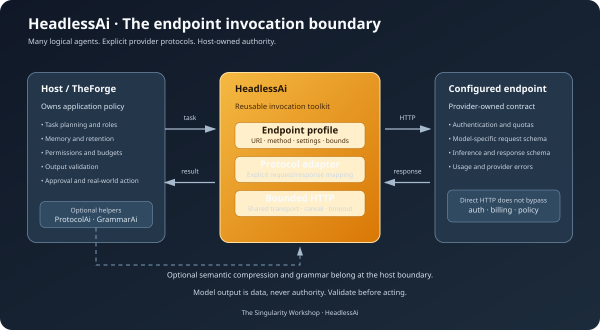
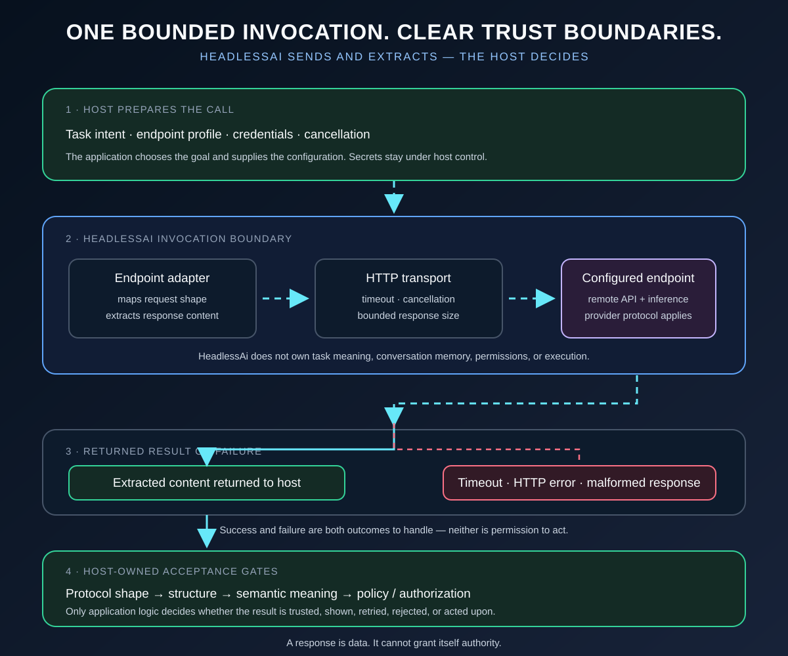

Profile
Immutable endpoint URI, HTTP method, headers, timeout, response bound, and provider-specific non-secret settings.
A .NET integration layer for sending bounded HTTP requests to configured AI-capable endpoints and extracting their responses—without browser automation or a provider SDK in the core.
The host owns task intent, validation, permissions, memory, and actions. HeadlessAi constructs an HTTP invocation through an explicitly selected protocol adapter. The configured endpoint performs inference; the host evaluates the returned data.


Immutable endpoint URI, HTTP method, headers, timeout, response bound, and provider-specific non-secret settings.
Maps to and from one endpoint protocol. Protocol differences remain explicit rather than pretending every API is interchangeable.
Reusable profile, adapter, and optional request-time header provider.
A lightweight logical caller over an injected HttpClient; not a dedicated thread, model, memory store, or permission grant.
The source includes raw-text, delegate, JSON, OpenAI Responses, Gemini generateContent, and Anthropic Messages adapters. Choose the adapter that matches the endpoint's actual protocol.
Current constructors, endpoint settings, credentials, response limits, and failure behavior.
Read the guide →Architecture visuals, invocation lifecycle, and supporting explanations.
Open the gallery →CI restores, builds, tests with coverage, packs, audits package contents, and compiles clean consumer examples.
Inspect build.yml →